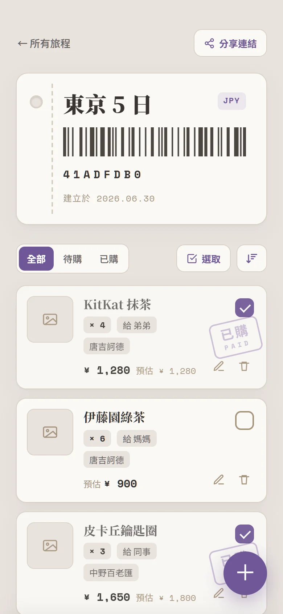

2026 · 個人專案
Travel Purchase Manager
旅行代購管理系統 — React SPA + Hono API + Cloudflare D1/R2，從前端到雲端部署全端獨立完成。
- 全端獨立開發：React SPA、Hono REST API、D1 Schema 與遷移，全跑在 Cloudflare 邊緣
- 建立 Test → Migration → Deploy 的 GitHub Actions CI/CD 管線（60 個自動化測試）
- 單一 Worker 同時服務前端與 REST API，降低部署複雜度